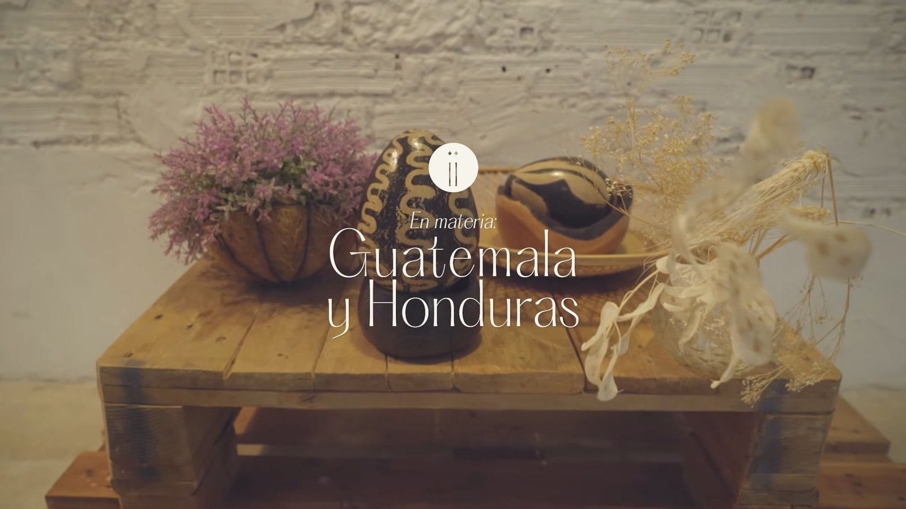

EUROsociAL+
Two video campaigns on what the European Union’s cooperation with Central America has achieved, told as a calm conversation: two chairs, a table and time to listen.
 Play
Play
- Client
- EUROsociAL+, European Union programme
- Date
- 2022
- My role
- Direction
- Format
- Two video campaigns
The programme
EUROsociAL+ is a European Union cooperation programme with Latin America. Since 2005 it has worked to reduce inequality, strengthen social cohesion and support public institutions in 19 Latin American countries, through peer learning and the exchange of experience between institutions of both regions. Its three areas are gender equality, democratic governance and social policies.
The campaigns
Two pieces built around a conversation between two of the programme’s consultants: En materia: Guatemala y Honduras, on the work done in both countries, and Visiones de futuro, on the challenges ahead. A warm set with crafts from the region, natural light and an unhurried rhythm, to make a technical subject feel close.
Stills

